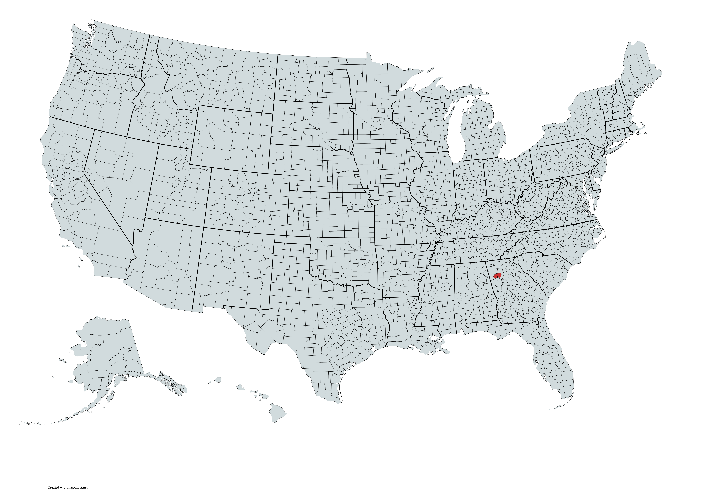

Mission Statement
The Christian Conservative Association exists to:
- Find, encourage, and endorse good, high-quality Christian men and women who feel called into public service, and to
- Supply Americans with quality options for consideration in the voting booth.
Foundation & Principles
We work toward governance rooted in the understanding that societal flourishing starts at home:
- Family Preservation: Rebuilding and reinforcing the nuclear family as society's foundational institution.
- Candidate Incubation: Providing peer support, media tools, and policy templates for Christian officeholders.
- Informed Citizenship: Equipping voters with non-partisan lookups and election resources.
Organizational Goals
- Goal 1: Stay true to Christ and encourage others to reflect their faith through their votes.
- Goal 2: Pray for wisdom and courage.
- Goal 3: Help Christian politicians be lights for Jesus in their workspaces.
Why the Golden Rhino?
In political circles, R.I.N.O. is often used as a critique for "Republicans In Name Only." We embrace the golden rhino not as a political insult, but as a bold statement of our true identity and priorities:
We are Christians first, and Republicans second.
Political parties are temporal vehicles for civic participation, but our faith in Jesus Christ is our eternal foundation. Our allegiance belongs to God, and that spurs us on and inspires us to help make our country better and more free, all for the encouragement of the Gospel.
2030 National Outreach Vision
Our goal is to reach 10,000 subscribers and have representation in every county (and equivalent) before 2030.
